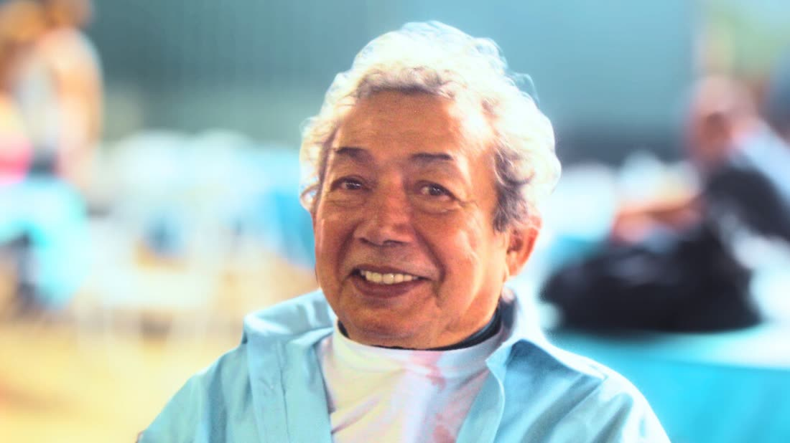
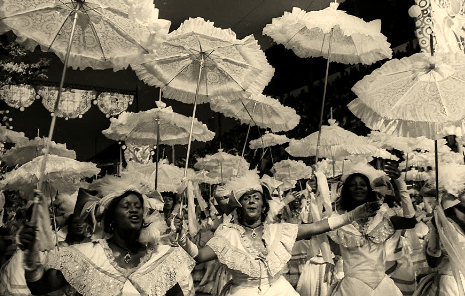
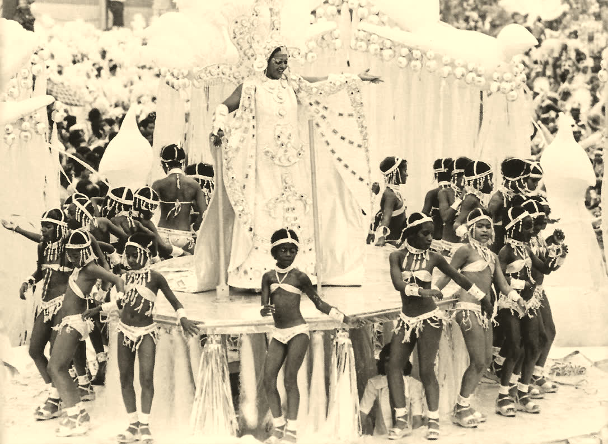
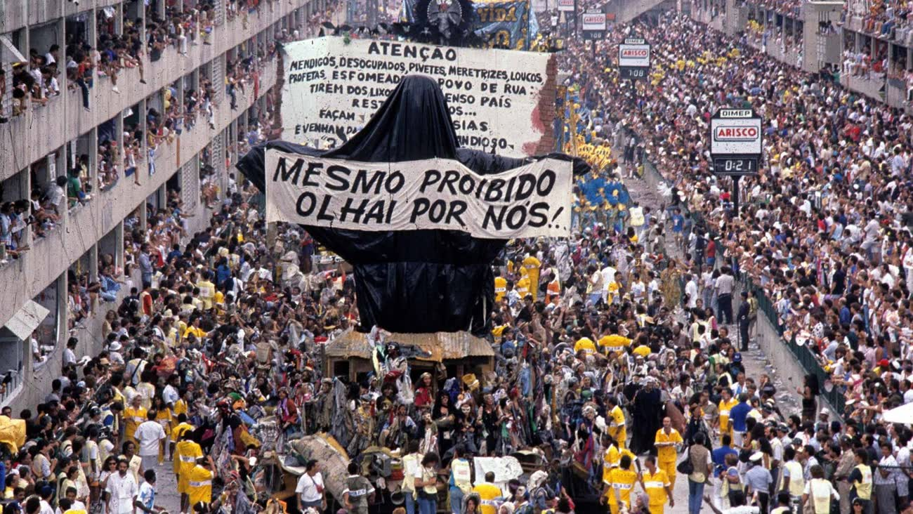
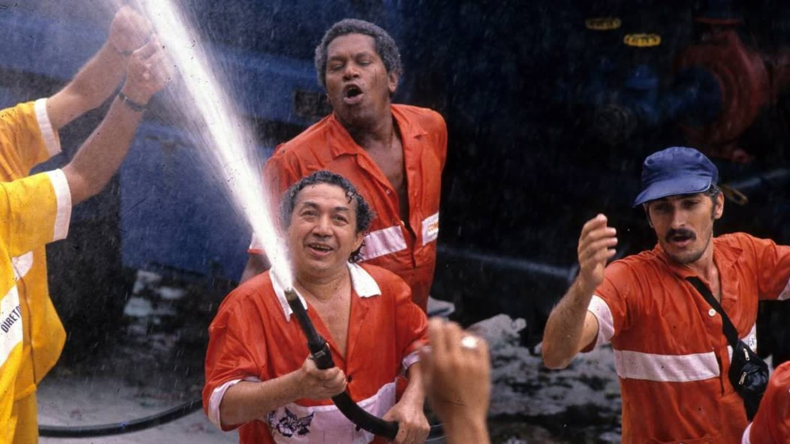
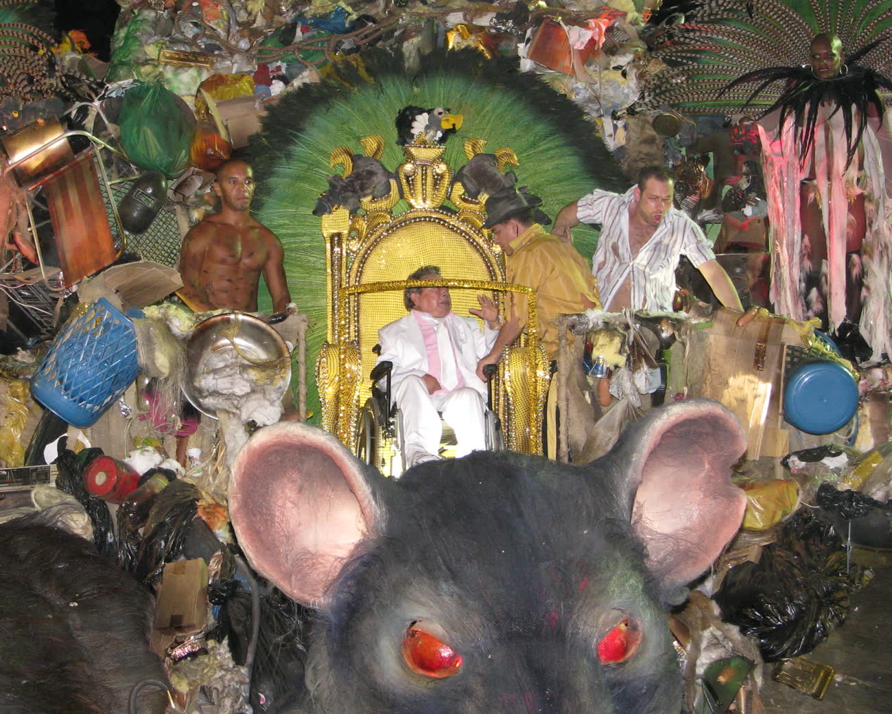
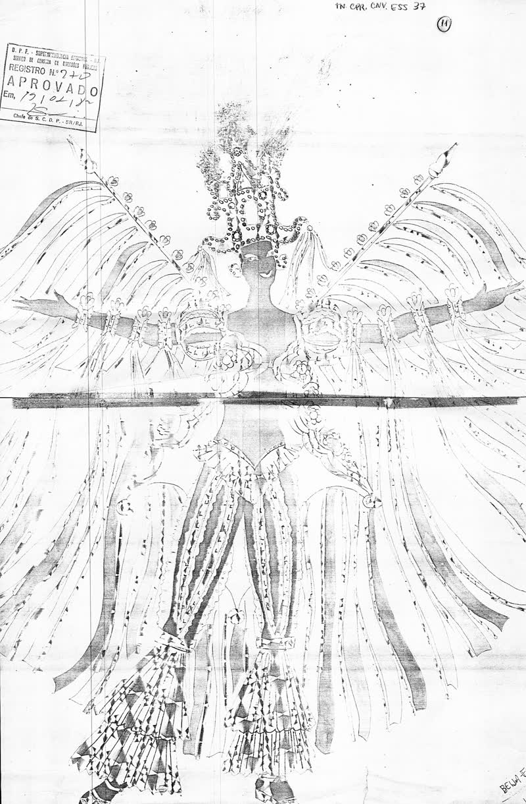

Ato I · O artista
Do palco do Municipal para a avenida.
Nasceu em São Luís, no Maranhão, em 1933. Chegou ao Rio aos 17 anos, numa terça-feira de Carnaval. Foi bailarino do Theatro Municipal por trinta anos, dançando Aida e O Guarani. Em 1961 entrou no Salgueiro. Levou para a Sapucaí o que aprendeu na ópera: cenário, luz e grandeza. Chamava o desfile de ópera de rua.

- 1933São Luís, Maranhão
- 1951Chega ao Rio numa terça de Carnaval
- 1961Entra no Salgueiro
- 1974Primeiro título como carnavalesco
- 1976Começa a era Beija-Flor
- 2004Deixa as escolas e vira consultor de projetos culturais
- 2008Cria o Instituto Joãosinho Trinta com José Ricardo Marques
- 2011Morre em São Luís, aos 78 anos
Nasceu João Clemente Jorge Trinta. O “s” de Joãosinho veio de uma numeróloga, que sugeriu trocar o “z” do diminutivo.



Ato II · Os títulos
O Pelé do Carnaval.
Era assim que o chamavam. Foram oito títulos como carnavalesco.
- 1974SalgueiroO Rei de França na Ilha da Assombração
- 1975SalgueiroO Segredo das Minas do Rei Salomão
- 1976Beija-FlorSonhar com Rei dá Leão
- 1977Beija-FlorVovó e o Rei da Saturnália na Corte Egipciana
- 1978Beija-FlorA Criação do Mundo na Tradição Nagô
- 1980Beija-FlorO Sol da Meia-Noite, uma Viagem ao País das Maravilhas
- 1983Beija-FlorA Grande Constelação das Estrelas Negras
- 1997ViradouroTrevas! Luz! A Explosão do Universo
LuxoLixo
1976 a 1983 · Beija-Flor
Sete anos de ouro na Sapucaí. Rei, faraó, a criação do mundo, as estrelas negras. Cada enredo era uma ópera de rua, com cenário, luz e grandeza de teatro.
1989 · Ratos e Urubus
Ele levou para a avenida o que a cidade jogava fora: mendigos, sucata e lixo. E um Cristo proibido, coberto de plástico preto. Ficou em segundo. Entrou para a história.
O mesmo homem, a mesma ideia: o povo gosta de luxo — e o luxo se faz com o que se tem na mão.
Ato III · 1989
Mesmo proibido, olhai por nós.
Rio, 7 de fevereiro de 1989. A Beija-Flor entra na Sapucaí com Ratos e Urubus, Larguem Minha Fantasia. Mendigos, sucata e lixo na avenida. No alto, um Cristo mendigo que a Justiça tinha proibido de desfilar. Ele passou assim mesmo, coberto de plástico preto, com uma faixa: mesmo proibido, olhai por nós.
Joãosinho desfilou vestido de gari, com uma mangueira na mão. A escola ficou em segundo lugar. O desfile ficou na história.





Tudo passava pela Censura. Desenho de fantasia e samba-enredo da Beija-Flor, carimbados em 1982. Arquivo Nacional, domínio público.
Ato IV · O segredo
Ele fazia luxo com o que a cidade jogava fora.
Isopor, garrafa, sucata e brilho. Nas mãos dele, tudo virava ouro. É esse ofício que o Instituto leva adiante.
Mantenha o botão pressionado, com o mouse, o dedo ou a barra de espaço, até a palavra virar LUXO.
Disseminar.
Os princípios de planejamento e produção cultural, para diferentes públicos, com os recursos que cada lugar tem.
Replicar.
Técnicas, conhecimento e lições aprendidas, para projetos públicos e privados de todos os tamanhos.
Compartilhar.
Práticas e casos de sucesso com quem trabalha com cultura.
Os últimos anos
Em Brasília, um amigo e uma casa.
Joãosinho foi a Brasília para se tratar no Hospital Sarah Kubitschek. Lá conheceu José Ricardo Marques, e ficou: foram cerca de cinco anos morando na casa do amigo. Foi nessa convivência que Ricardo conheceu, além do artista, o homem e o pensador que via na cultura a identidade do Brasil.
Em 2008, os dois criaram juntos o Instituto Joãosinho Trinta, para que o ofício do carnavalesco continuasse servindo a quem faz cultura. Ricardo preside a casa até hoje.
A história do Instituto